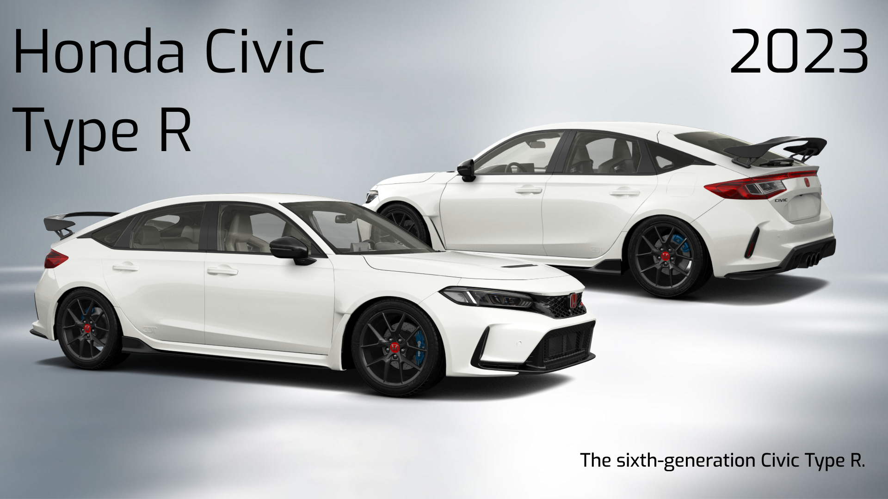
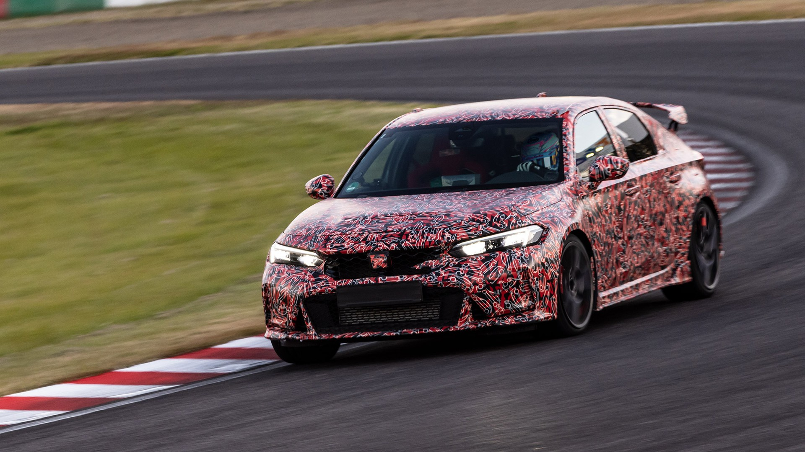
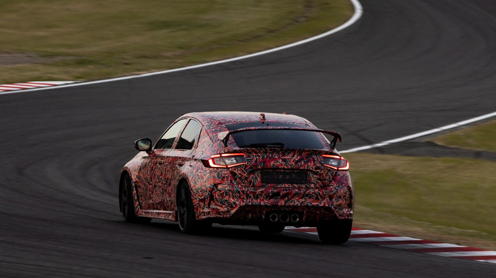
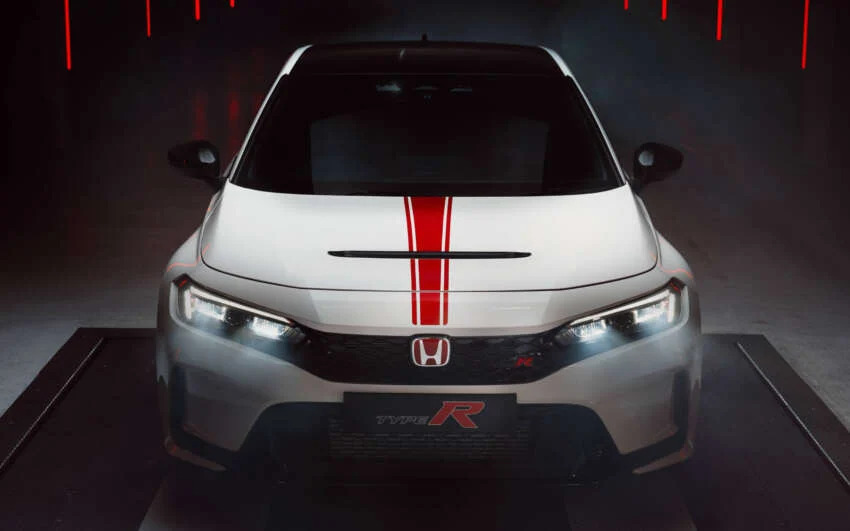
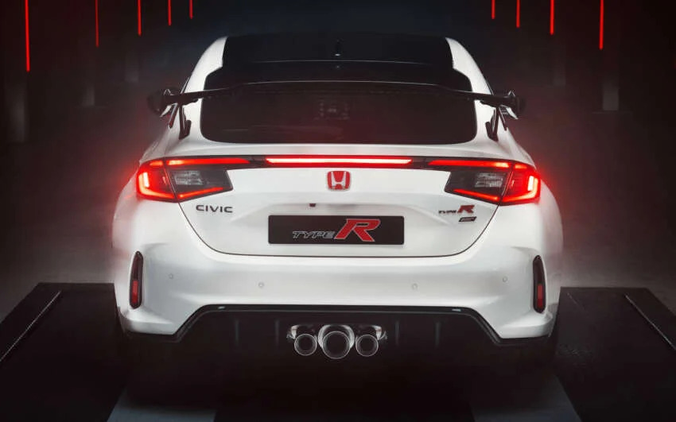
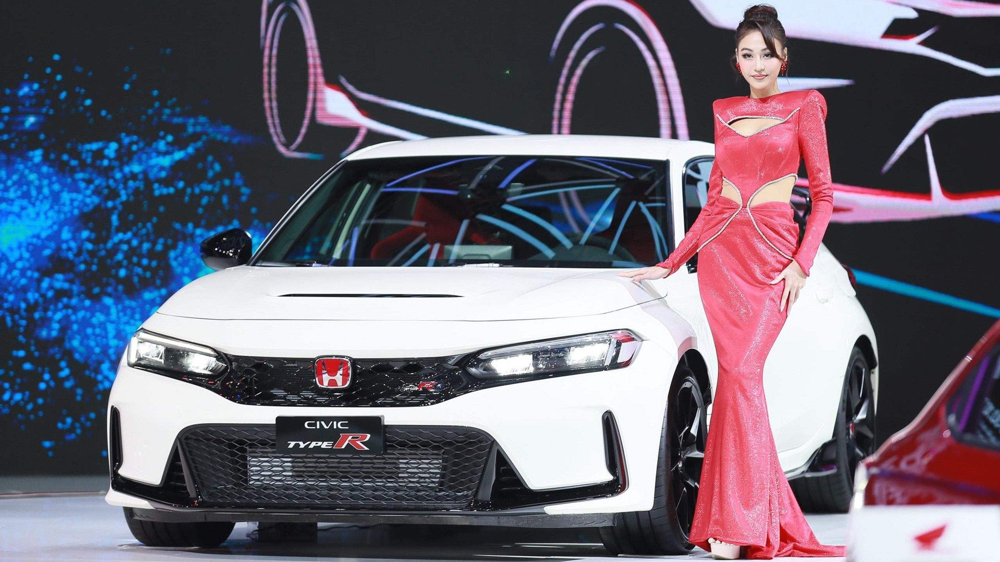
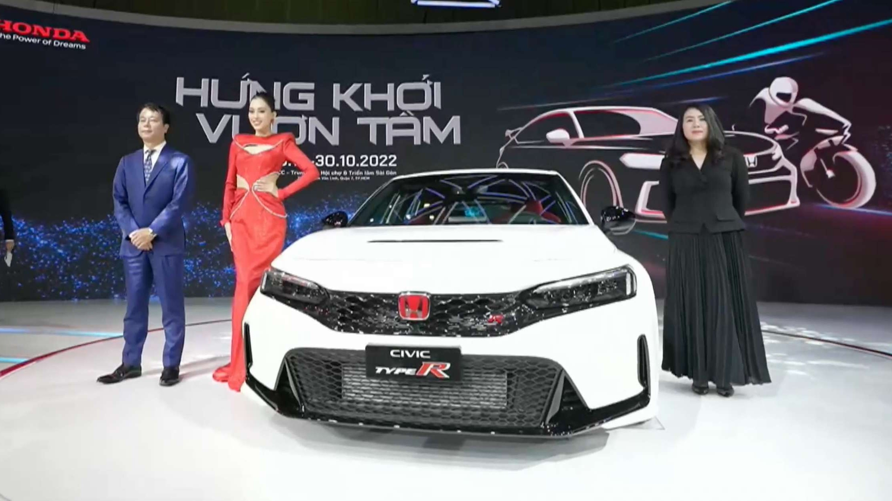

The Honda Civic Type R (Japanese: ホンダ・シビックタイプR, Hepburn: Honda Shibikku Taipuāru) is a series of hot hatchback and sports sedan models based on the Civic, developed and produced by Honda since September 1997. The first Civic Type R was the third model to receive Honda's Type R badge (after the NSX and Integra). Type R versions of the Civic typically feature a lightened and stiffened body, specially tuned engine, and upgraded brakes and chassis, and are offered only in five- or six-speed manual transmission. Like other Type R models, red is used in the background of the Honda badge to distinguish it from other models..
The sixth-generation Civic Type R was introduced on 20 July 2022 for the 2023 model year. Designated under the model code FL5, it is presently built in Yorii, Saitama, Japan, where the regular Civic liftback for the Japanese market is also produced.The FL5 Civic Type R is considered to be less aggressive in design compared to its predecessor, featuring subtler styling with smaller vents and reduced decorative elements.It uses 19-inch wheels (smaller than the FK8’s 20-inch units) but with wider 265/30 Michelin Pilot Sport 4S tires, improving overall grip. Unlike the FK8, which used plastic add-ons for its wider rear arches, the FL5 achieves its wider track with fully reshaped rear doors and quarters. Inside, the FL5 retains signature Type R details such as red carpeting, semi-bucket seats, and a unique digital instrument and infotainment interface that integrates the Honda LogR data logger for tracking lap times and performance metrics.The 2.0-litre turbocharged K20C1 engine carries over from the FK8 with refinements including a more compact and efficient turbocharger housing and redesigned turbine blades to improve airflow and power delivery.
In March 2022, a pre-production FL5 Civic Type R set a front-wheel-drive lap record at the Suzuka Circuit with a time of 2:23.120. On 20 April 2023, Honda announced that the FL5—specifically the lightweight Type R S variant—had reclaimed the front-wheel-drive production-car record at the Nürburgring Nordschleife with a lap time of 7 minutes 44.881 seconds, surpassing the 2019 Renault Mégane R.S. Trophy-R’s time of 7:45.399. Although the FL5’s recorded time appears slower than the FK8’s 7:43.80, this is due to updated Nürburgring measurement rules introduced in 2019, which extended the official lap distance from 20.600 km to 20.832 km.


The FL5 Civic Type R went on sale in Europe in late 2022, with deliveries beginning in January 2023. In June 2025, Honda Europe announced the Ultimate Edition, limited to 40 units, marking the end of sales in the European market due to stricter European emission standards. The model, finished in Championship White, features red decals, a black-painted roof, carbon details, illuminated interior trim, and special Type R door-mirror projection lighting.


The FL5 Civic Type R was launched in the United Arab Emirates on 1 February 2023, marking the model’s return to the region after 12 years.
The FL5 went on sale in North America in October 2022.
The FL5 Civic Type R debuted in Vietnam on 26 October 2022, followed by launches in Thailand (December 2022), the Philippines (January 2023), Indonesia (March 2023), and Malaysia (September 2023). On 6 November 2024, Honda Malaysia issued a proactive product update for 2023–2024 models to address a potential issue with the electric power steering gearbox.

